Chat with any model
Claude, Codex, local models through Ollama or the built-in engine, or any OpenAI-compatible API. Choose the model and its reasoning level for each conversation, and watch a meter of how full the context is.
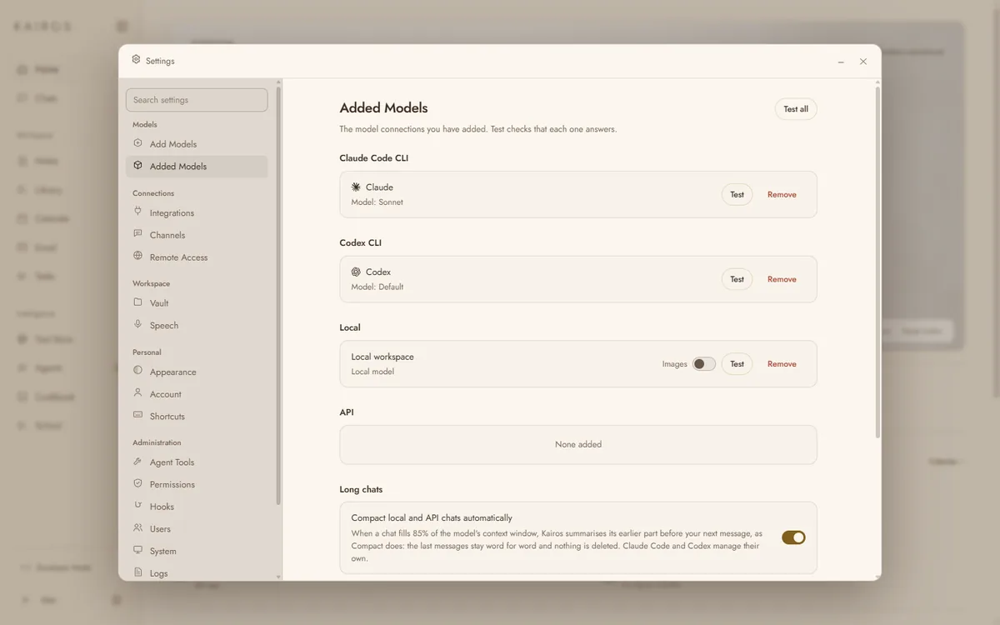
Free and open source Windows and macOS
Kairos is a private AI workspace on your own computer. Chat with the models you choose, keep a memory you own, and let agents work while you get on with your day.
Windows 10 and 11 · macOS on Apple Silicon · MIT license
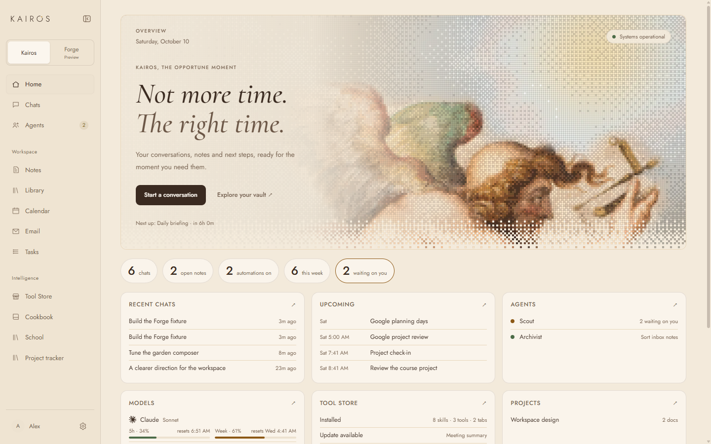
The name
The Greeks had two words for time. Chronos is the measured kind: hours, sprints, the calendar. Kairos is the other kind, the opportune moment, the narrow opening when action works. Kairos the app is built for that: it keeps the hours of work running in the background, so you can be present for the moments that matter.
What it does
Claude, Codex, local models through Ollama or the built-in engine, or any OpenAI-compatible API. Choose the model and its reasoning level for each conversation, and watch a meter of how full the context is.

Your knowledge is a vault of plain Markdown files. Search it, browse it as a linked map, and edit it in Kairos or any other tool. It stays useful without the app.
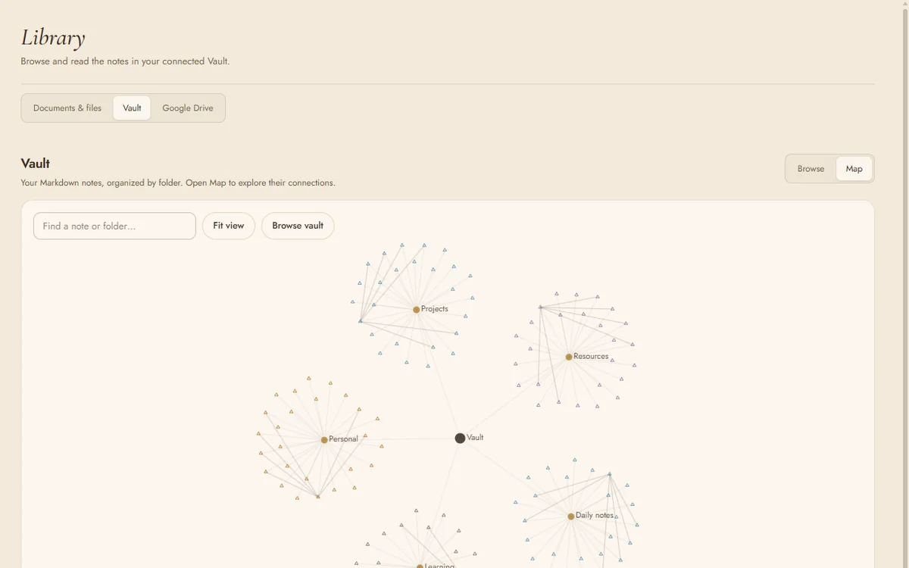
Named agents with their own role, goals and memory. They work through a board of cards, ask you when they need a decision, and can team up on bigger jobs.
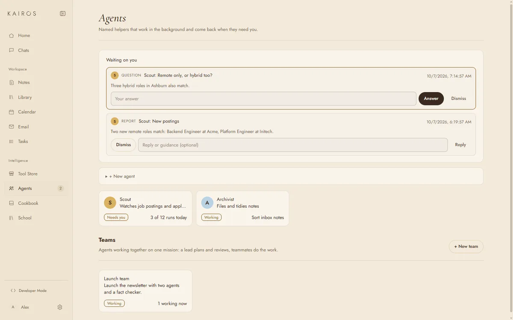
Scheduled prompts and built-in routines like a daily brief. Each runs once, can be stopped, and delivers its result here or to a connected channel.
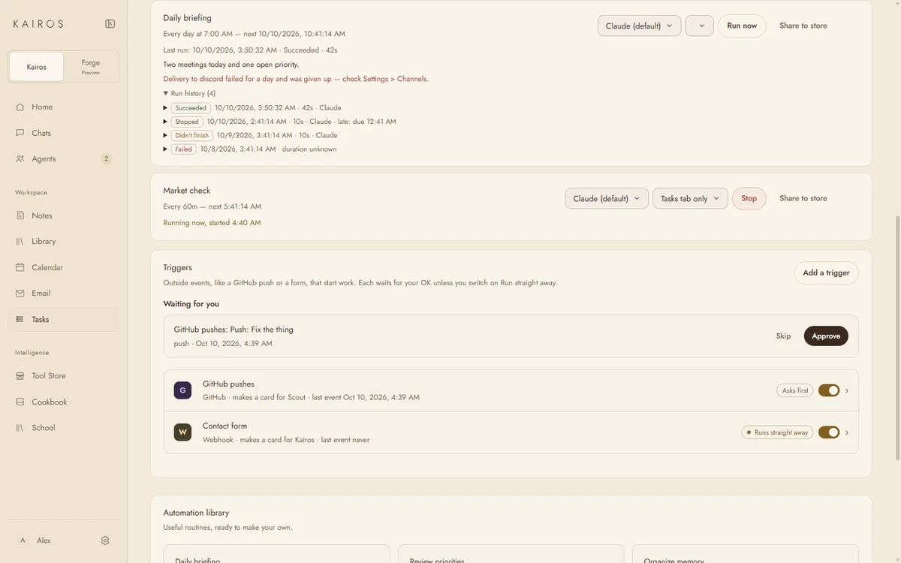
Open any chat, task or agent run and see what it did: each tool it called, how long it took, what failed and how it ended.
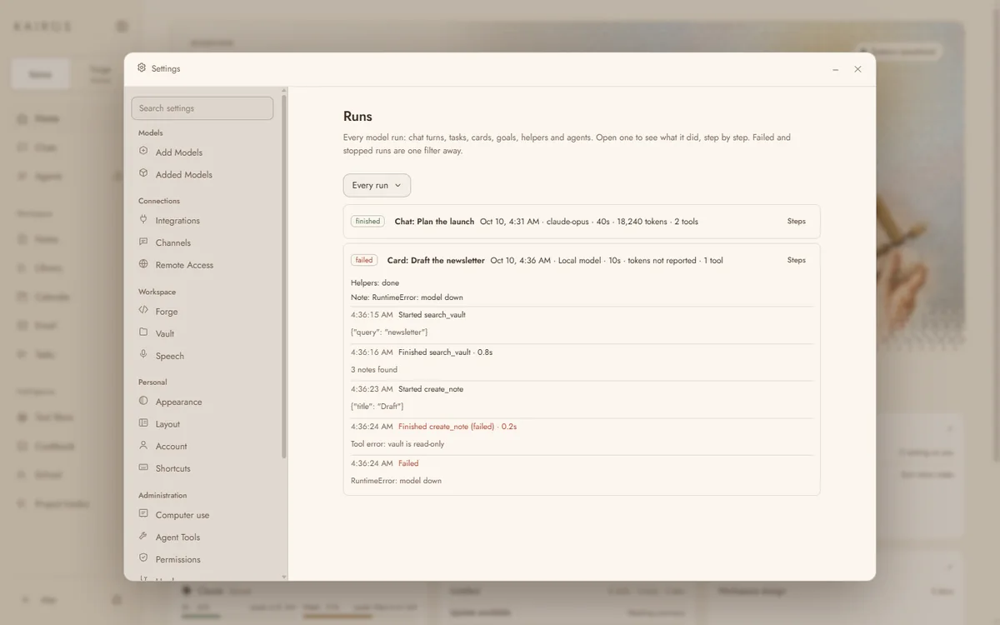
One file holds your chats, notes, agents and settings. Restore it on any machine, with a safety copy of what was there. Saved passwords stay out unless you choose.
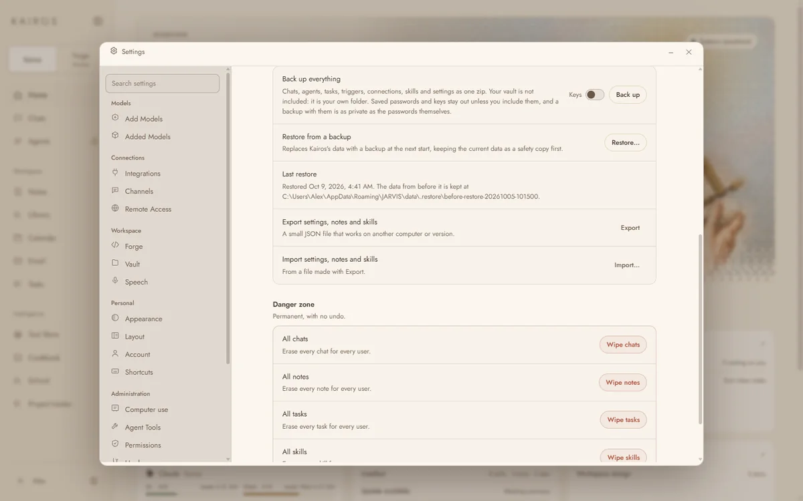
Everything in Kairos
A closer look
A new chat starts with one centered composer. Send a thought and it settles beneath the conversation. Keep history open, or tuck it away beside the slim icon rail.
Pick the model and its reasoning level per conversation, and preview generated files right in the chat. Open a web page beside the conversation without leaving the app.
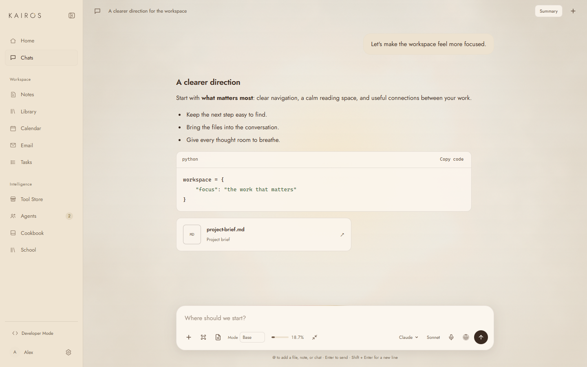
Your vault becomes a map of notes and folders. Search for a thought, explore its neighbours, or browse the files directly.
Your memory is still plain Markdown. The map is just another way in.
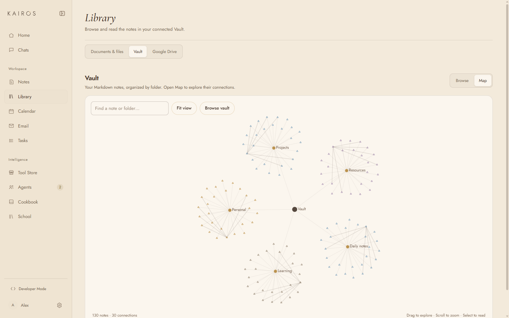
A morning brief. A weekly review. A prompt you want run every Friday. Set the schedule, then see exactly what happened.
Real run history and delivery status, beside the controls that matter.
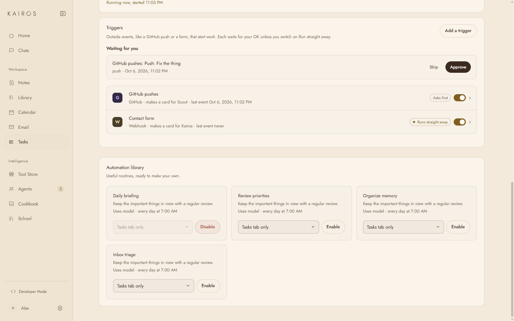
Connect Claude or Codex, a local model server, or an OpenAI-compatible provider, then choose the model inside each conversation.
No model is included by default. Accounts, usage and hardware are yours to choose.
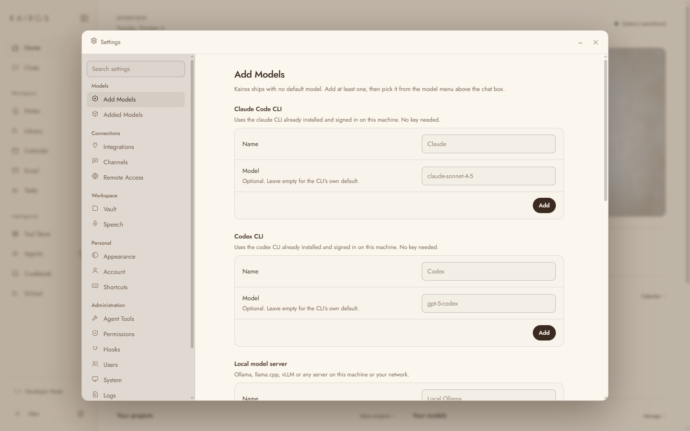
Claude, Codex, local models or any API. You decide what powers each conversation, and you can change your mind.
A folder of Markdown files. Read it, edit it, back it up. It stays yours if you ever leave.
Your data stays on your computer. Connect only the services you want, and see every run.
Download
The app includes its own Python runtime. Nothing else to install.
A standard installer. Kairos keeps itself up to date.
Download for WindowsKairos-Setup.exe
Open the disk image and drag Kairos to Applications. Updates are installed the same way.
Download for macOSKairos-arm64.dmg
Clone the repository and run the backend with Python. For developers and anyone who wants to read every line.
Build from sourcegithub.com/david-darr/kairos
Run the installer for your system.
Start fresh, or point Kairos at the Markdown notes you already keep.
Add a model in Settings, then start a conversation.
The installers aren't code-signed yet, so Windows SmartScreen and macOS Gatekeeper may ask you to approve the app the first time. The Mac build runs on Apple Silicon, not Intel Macs. Screenshots use demo data.
Kairos runs on your computer. When you choose a cloud model or connect an outside service, the data that request needs goes to that provider.
Questions
Yes. Kairos is free and open source under the MIT license. Models you connect may have their own costs: a Claude or Codex subscription, or an API account. Local models cost nothing to run.
On your computer. Chats, settings and agents are in your app data folder, and your memory is a folder of Markdown files you choose. Nothing is sent anywhere unless you connect a cloud model or an outside service.
Claude through Claude Code, Codex through the Codex CLI, local models through Ollama or the built-in engine, and any OpenAI-compatible API. You can switch per conversation.
On Windows, yes: updates download in the background and install when you quit. On macOS, download the new version from this page and replace the app.
Yes, through Tailscale, set up in Settings. It's never exposed to the public internet: it serves HTTPS on your private network and requires a login.
Yes. Settings has a full backup that captures everything in one file, and a restore that keeps a safety copy of what it replaces.
JARVIS is now Kairos. The update keeps your install, your chats and your settings exactly where they were. On a Mac, after installing Kairos you can delete the old JARVIS app.